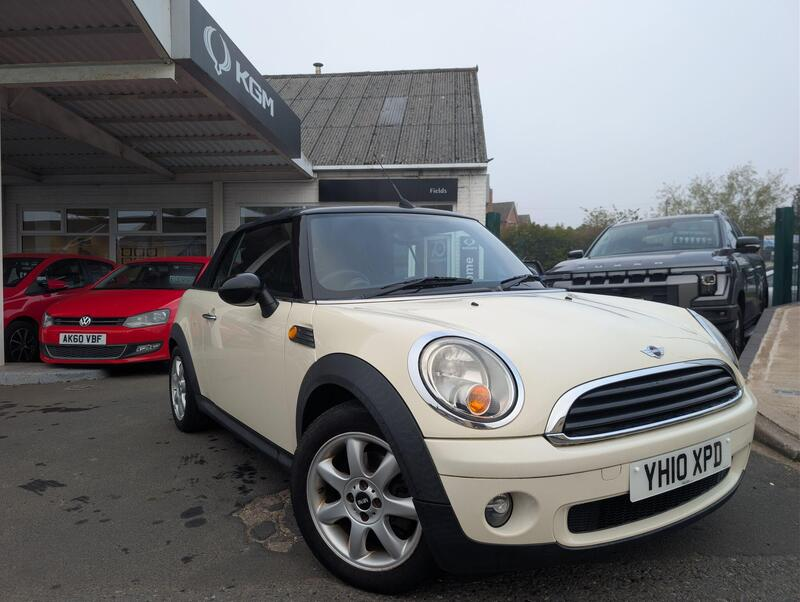
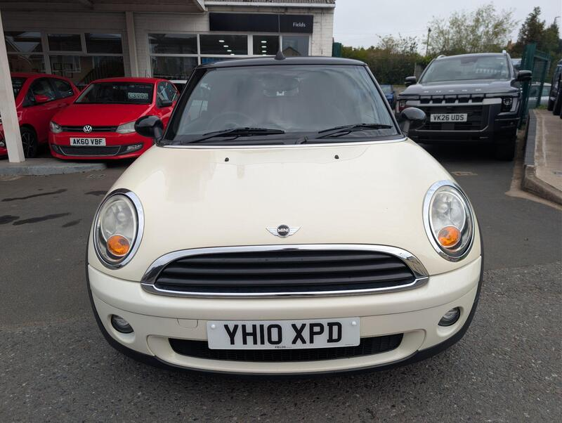
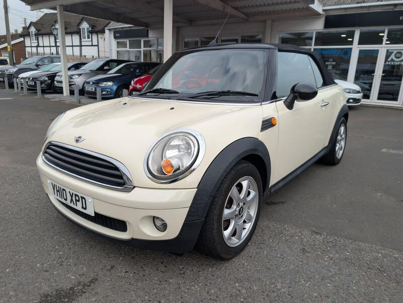
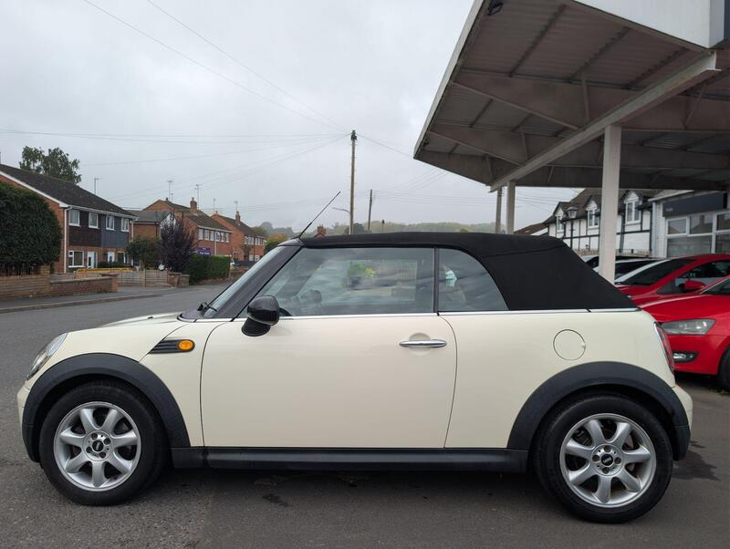

Seller photos from the AutoTrader ad.
MINI Convertible 1.6 One
A low-mileage, sensible MINI from a trader.
Key facts
| Price | £2,995 |
|---|---|
| Year | 2010 |
| Miles | 61,488 |
| Model | MINI Convertible 1.6 One |
| Colour | White |
| Registration | 2010 (10 reg) |
| Owners | 3 owners |
| Service history | Not stated |
| MOT | Not stated |
| Seller | Trade |
| Location | Stourport-On-Severn |
| From GU7 | 107 mi (AutoTrader) |
| Checked | 13 Oct 2026 |
Why buy it
- Only 61k miles, excellent service history (ad)
- R57, around 49 mpg
Things to check
Prince engine: ask about the timing chain
Check that the roof hydraulics work
- MINI Convertible R52/R57 weak spots
Not flagged as a major issue in our sources; check for water ingress via roof drains and seals. R52 CVT auto fails (avoid); supercharged R52 power-steering pump; pre-Nov 2011 Prince timing-chain tensioners; roof hydraulics £395–495 average repair, R57 roof from ~£1,735.
Seller says (extract)
“49+MPG EXCELLENT SERVICE HISTORY LOW MILES Available is a wonderful little Mini Convertible with incredibly good service history and very low miles. It would make an excellent little run-around or weekend fun car and with its claimed average of 49+mpg it doesn't have to be an expensive bit of fun to have either. The exterior of the car is finished in a solid white and against the black fabric roof it looks really smart. It sits on a lovely, rare optioned set of alloy wheels and with the roof up or down it really looks the part. It also has a set of reversing parking sensors making parking that much easier in a modern, small car park space. The boot of the car is expectedly quaint, however it would fit more than you would expect and hidden under the floor is the toolkit and locking wheel nut key and if you did need more space then the rear seats can fold down to create more space. The rear seats themselves are in good condition and have ISOFIX points in them ready for a childs seat. Up front, the seats are again in good condition and the car has a good level of kit fitted to it. It has a trip computer, FM/AM radio, Aux port and CD player and a 12V socket. It has dual cup holders, a button to put all 4 windows down at once and the electric sunroof button. The roof goes down effortlessly and quickly and has 2x settings - The 1st is for a regular sunroof level of opening and the 2nd is the full drop down of the roof giving you options to suit you. The car is a cracking example and with the near full service history, low mileage and low running costs, it's definitely not a car to miss! We welcome part exchange and if you have any questions or would like to arrange a test drive, please just give us a call on 01299 827221 or message us on here or through our website. A little about us: We are a local, family run garage based in the West Midlands with decades of experience in the motor trade. As a local business we are invested in our community and customer base and pride ourselves on our customer service, both before, and long after a sale.…”